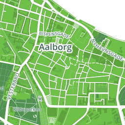

Vector tiles
En ny teknologi til webkort
Kort alle vegne
Integreret del i tablets, mobiltelefoner, webapps, mobilapps, styresystemer, online avisartikler etc. etc.
Nye forventninger til digitale kort
Fuld kontrol over kartografi
Underbygge budskabet. Fex stemning eller brand
Filtrering
Fokusér
Trinløs zoom
Fri rotation
Udnytte høj opløsning på nye skærme
Kort sagt:
Designeren vil bestemme over kortet. Ikke omvendt.
Lynhurtige - også ved mange brugere
3D
Eksisterende teknologier
WMS
- Kartografi og filtrering - ok*
- Trinløs zoom - ok
- Ingen rotation
- Pixels er per definition 0,28mm
- Resourcekrævende at rendere et kort
- Næsten umulig at cache
- "Langsom"
WMTS / TMS / ...
- "Hurtig"
- Hastighed opnås gennem caching som gøres mulig ved at begrænse mulighederne
- Ingen brugervalgt kartografi eller filtrering - alt er defineret på serveren
- Zoom i trin
- Ingen rotation
- Ikke understøttelse for skærmopløsninger
Skærmopløsning og billedbaserede kort
|  |  |